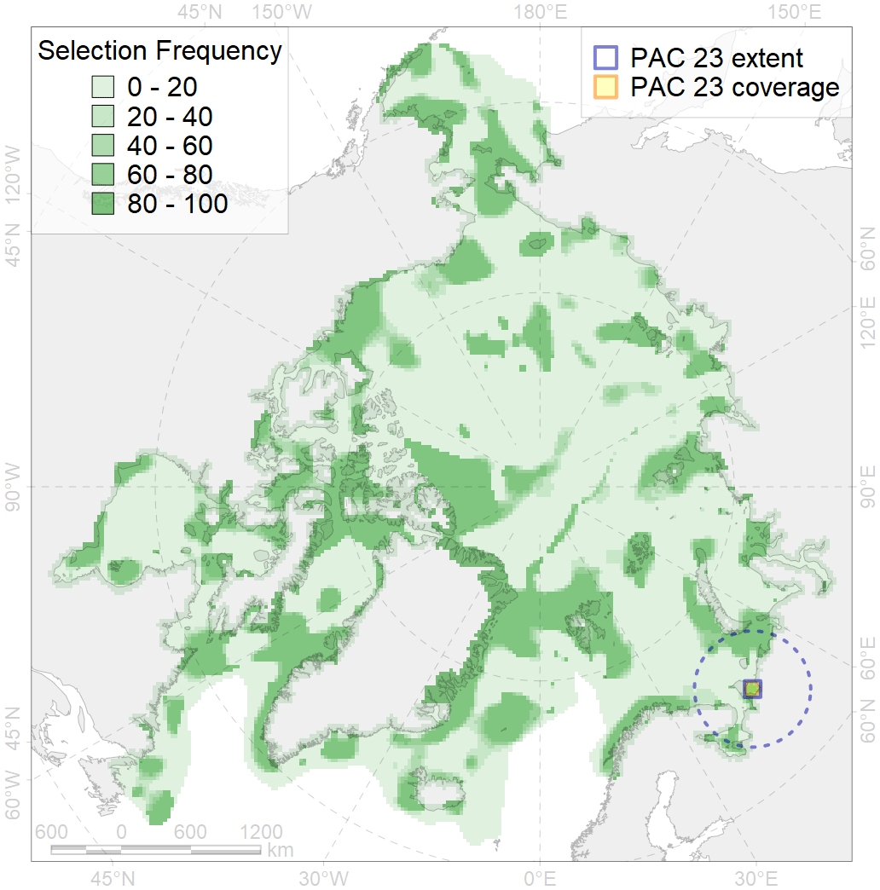
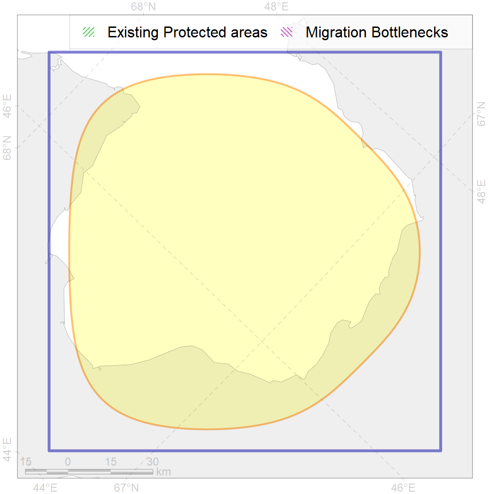

23
For more information regarding this PAC and to conduct custom spatial analysis using the PAC data or any spatial query, please consult Accenter.

0
CFs entirely within the PAC area
5
CFs at least 25% within the PAC area
3
CFs with at least 50% of their target achieved in the PAC
6
CFs with at least half of their target achieved in the PAC
| CF ID | CF Name | Proportion in the PAC | Conservation Target | Contribution to ArcNet Target Achievement | PAC’s Contribution to the Achieved Target |
|---|---|---|---|---|---|
| 7075 | I.1.3.3. Large shallow unstratified bays | 91.7% | 29.5% | 273.1% | 99.0% |
| 7015 | Chioshskaya Bay boreal enclave | 80.9% | 70.2% | 101.1% | 98.4% |
| 7245 | Pechora Sea kelp patches (13-14) | 50.0% | 30.0% | 96.7% | 53.2% |
| 3124 | Polynyas distribution in the Mezen outfall region | 35.7% | 12.0% | 265.0% | 94.8% |
| 8025 | intertidal zone of the Barents Sea LME | 30.7% | 28.0% | 95.2% | 40.9% |
| 6061 | Common eider (Somateria mollissima mollissima) SE Barents and Kara Sea breeding&moulting grounds | 9.1% | 55.2% | 14.4% | 13.2% |
| 4020 | Feeding area of the White-sea vendace (Coregonus sardinella marisalbi) | 7.8% | 24.0% | 28.5% | 12.4% |
| 8032 | Salt marshes of the Barents Sea LME | 7.7% | 50.0% | 13.7% | 13.6% |
| 7064 | I.1.1.1. Coastal domain in the Barents Sea | 6.4% | 7.8% | 71.3% | 10.1% |
| 2041 | Ringed seal whelping areas in the Barents Sea | 5.0% | 24.0% | 18.3% | 7.8% |
| 4089 | Fish zoogeography, Arctic Region, Subarctic Transitional-Atlantic Province, Mesen’ – Pechora aquatory of the Barents District | 3.8% | 19.7% | 16.7% | 7.5% |
| 2003 | Bearded seal whelping areas in the Barents Sea | 3.8% | 24.0% | 13.9% | 6.0% |
| 4072 | Range of the Pechora herring (Clupea pallaii suworowi) | 2.9% | 12.0% | 21.2% | 6.0% |